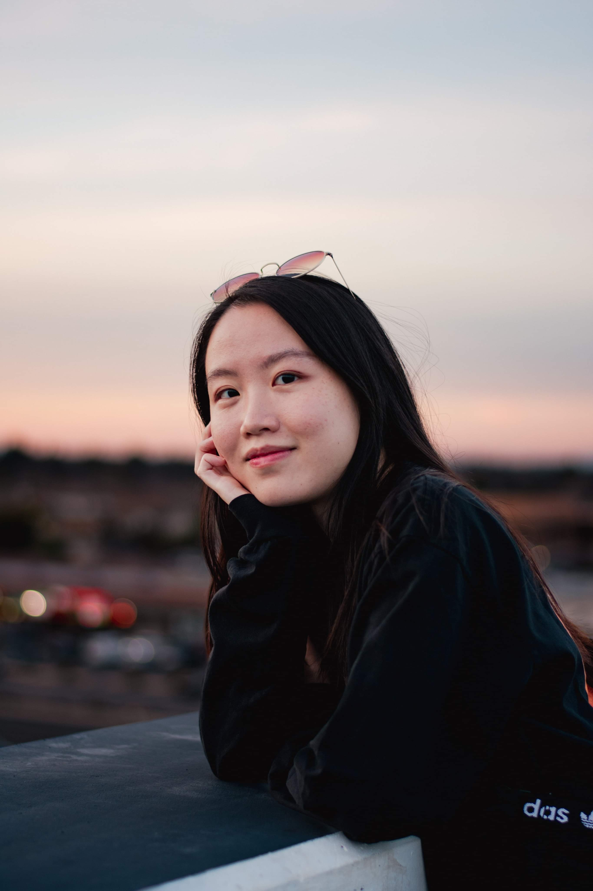

<div class="container">
	<div class="row my-5">
		<!-- Headshot -->
		<div class="col-sm-4 d-flex justify-content-center">
			
		</div>
		<!-- About Me -->
		<div class="col-sm-8 mt-3 ps-3">
			<h4>about me &mdash;</h4>
			<p class="lead">Hello! I'm Jessica, a UX designer based in the Bay Area, California. I'm passionate about designing technological solutions that can help people get the help they need, before they even need to ask for help.</p>
			<p>I'm currently a Master's student in Information Management at the University of Washington. Previously, I graduated from UC Berkeley with a bachelor's in computer science and a minor in data science.</p>
			<p>In my free time, I like exploring new places, playing video games (let's play Valorant!), and drinking boba.</p>
			<p>I'm best reached by email at <span style="color: #5d8aa8"><b>jessica.kuo.usa@gmail.com</b></span>.</p>
			<br>
			<h4>experience &mdash;</h4>
			<p>Design for America, UW Chapter Productivity Team &mdash; UX Designer, Spring 2023</p>
			<p>Amazon Music &mdash; Software Engineering Intern, Summer 2019</p>
			<p>Amazon Web Services &mdash; Software Engineering Intern, Summer 2018</p>
			<br>
			<h4>contact &mdash;</h4>
			<p><a href="https://www.linkedin.com/in/jesskuo/" style="color: #5d8aa8">LinkedIn</a> &#8599;</p>
		</div>
	</div>
</div>